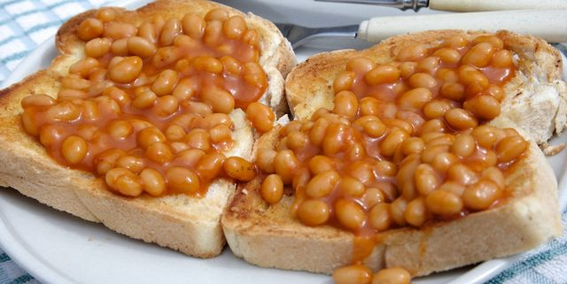

Beans on Toast

What? Beans on toast?! That's not a recipe! Actually, it is!
Have you ever had 'cowboy beans'? If you're craving something a bit saucier and a kick, add a tablespoon of bbq sauce to your bean mixture
To fail at cooking, you will need:
- A tin of beans
- 2 pieces of bread
- 5g of butter
- Salt (to taste)
Instructions
- Cook the beans on the hob until boiling
- Put the pieces of toast in a toaster until browned
- Place the toast on a plate and spread on the butter
- Top with beans and a sprinkling of salt